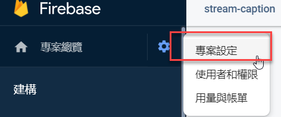
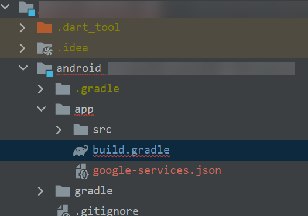

[Flutter] 設定 Firebase Messaging 功能
網路上面關於設定 Flutter 的文章真的很亂，也不知道哪一個版本能用，乾脆自己整理一篇目前可以使用的版本，還好越晚使用，設定步驟就越簡單
設定 Firebase 專案
需要從 Firebase 專案中下載 google-services.json 的檔案，以供後續套件使用，取得步驟如下
- 進入 Firebase 專案
- 選擇專案設定

- 新增應用程式 (Android)後，即可取得
google-services.json的檔案 - 將該檔案複製到 Flutter 專案下的
android/app資料夾下
Flutter Firebase Message 套件
套件安裝
於 pubspec.yaml 檔內新增下列套件
1 | firebase_core: ^0.7.0 |
環境設定
為了要讓 Flutter 在建置時，能載入剛剛下載的 google-services.json 檔案，還需調整以下檔案
-
android/build.gradle1
2
3
4
5
6
7buildscript {
dependencies {
// ... other dependencies
// 新增這一行
classpath 'com.google.gms:google-services:4.3.3'
}
} -
/android/app/build.gradle1
2
3apply plugin: 'com.android.application'
// 新增這一行
apply plugin: 'com.google.gms.google-services'
※如果 Flutter 專案的 Flutter 版本是 1.12 以上，則不需要額外新增任何檔案，如果是低於該版本，請依此文件說明新增檔案
程式碼設定
Flutter 內的程式碼要增加的項目如下
-
main.dart
1
2
3
4
5
6
7
8
9
10
11
12
13
14
15
16
17
18
19
20
21
22
23
24
25
26
27
28
29void main() async {
...
await Firebase.initializeApp();
// Set the background messaging handler early on, as a named top-level function
FirebaseMessaging.onBackgroundMessage(_firebaseMessagingBackgroundHandler);
/// Create an Android Notification Channel.
/// 這裡有多使用套件: flutter_local_notifications: ^3.0.3
/// We use this channel in the `AndroidManifest.xml` file to override the
/// default FCM channel to enable heads up notifications.
await flutterLocalNotificationsPlugin
.resolvePlatformSpecificImplementation<
AndroidFlutterLocalNotificationsPlugin>()
?.createNotificationChannel(channel);
/// Update the iOS foreground notification presentation options to allow
/// heads up notifications.
await FirebaseMessaging.instance.setForegroundNotificationPresentationOptions(
alert: true,
badge: true,
sound: true,
);
}
Future<void> _firebaseMessagingBackgroundHandler(RemoteMessage message) async {
// If you're going to use other Firebase services in the background, such as Firestore,
// make sure you call `initializeApp` before using other Firebase services.
await Firebase.initializeApp();
print("Handling a background message ${message.messageId}");
} -
在啟動的第一個 widget 檔案內
1
2
3
4
5
6
7
8
9
10
11
12
13
14
15
16
17
18
19
20
21
22
23
24
25
26
27
28
29
void initState() {
super.initState();
// 當 app 處於開啟狀態時，監聽推撥訊息用
FirebaseMessaging.onMessage.listen((RemoteMessage message) async {
RemoteNotification notification = message.notification;
AndroidNotification android = message.notification?.android;
if (notification != null && android != null) {
await flutterLocalNotificationsPlugin.show(
notification.hashCode,
notification.title,
notification.body,
NotificationDetails(
android: AndroidNotificationDetails(
channel.id,
channel.name,
channel.description,
icon: 'launch_background',
),
));
}
});
FirebaseMessaging.onMessageOpenedApp.listen((RemoteMessage message) {
print('A new onMessageOpenedApp event was published!');
// 這邊可以寫在 app 關閉狀態，點通知訊息時，打開 app 後要做的事情
});
}
當然還有其他可以設定的部分，更多細節可以參閱這裡的文件